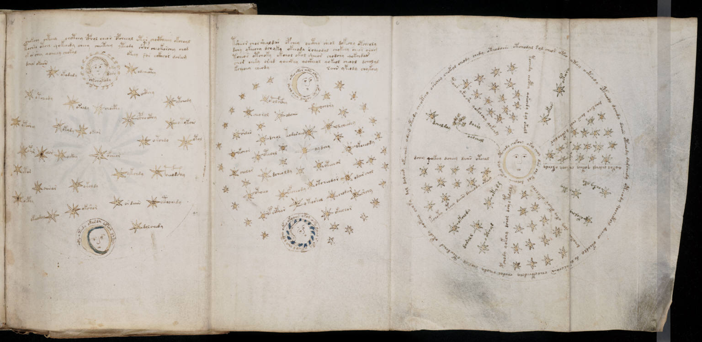

f68r2
1tsheeor chor sheal dar opchey oeecthy sheol dokechy otcheoly2dchy ykeechy dchyky okeeoda rcheodal chokeey cheor oram3tcheos otchoky okchol okol sheeor chodchy qokchdar4chor chesy oriid qoeeckhy qockheol qokeol cheoal dcholal5kcheoey cheodysain ykeody chykchy6okeo okor oko okemy okaisy qokool cheo qo*ol7otolchcthy8cheorol9odaiin10ochory11shdar12dchol13todaraiily14olcheesey15okchor16oteool17oydchy18cholar19okcheody20dcheoldy21oteeeor22etocho23ofchsody24otcheodar25odair chol26opocphor27otoshol28chodar29shchy30okeechor31okeo okoaiin okol oky oeeeo r ekey okchol cheo o koiin
